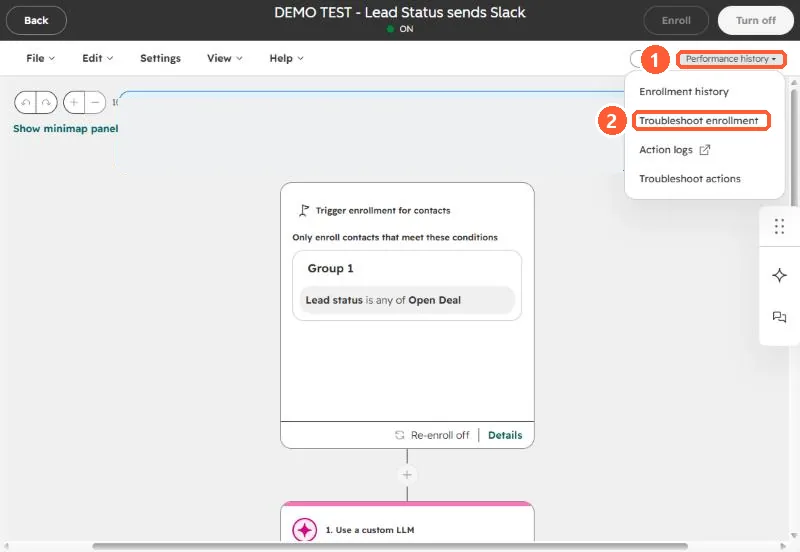
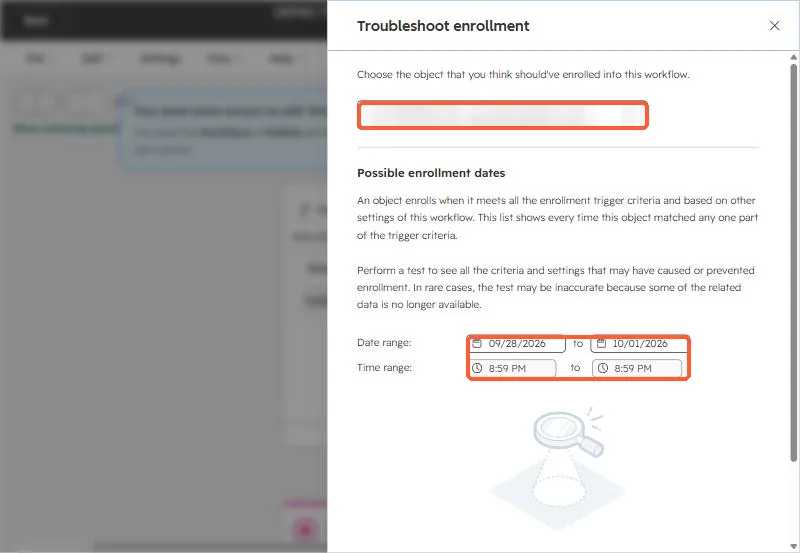
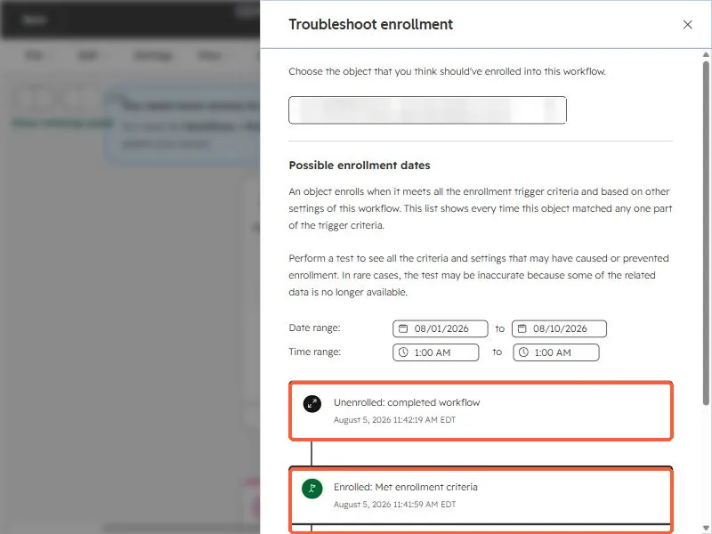
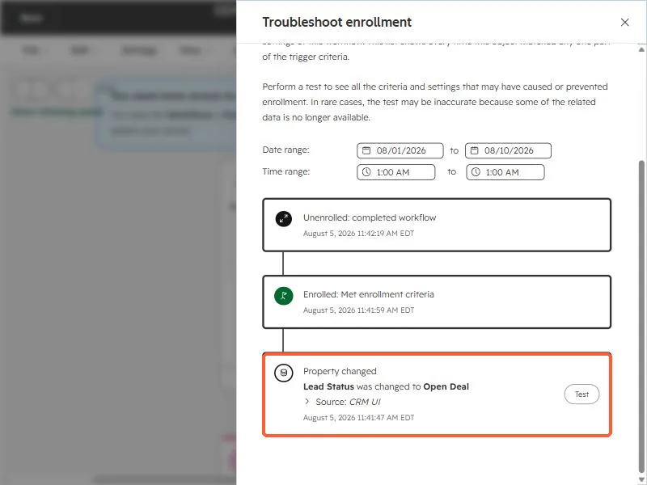
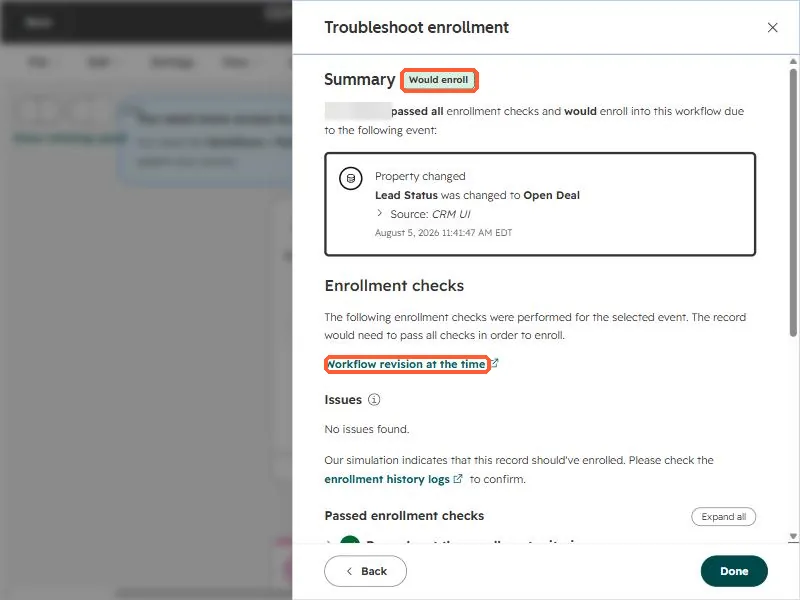
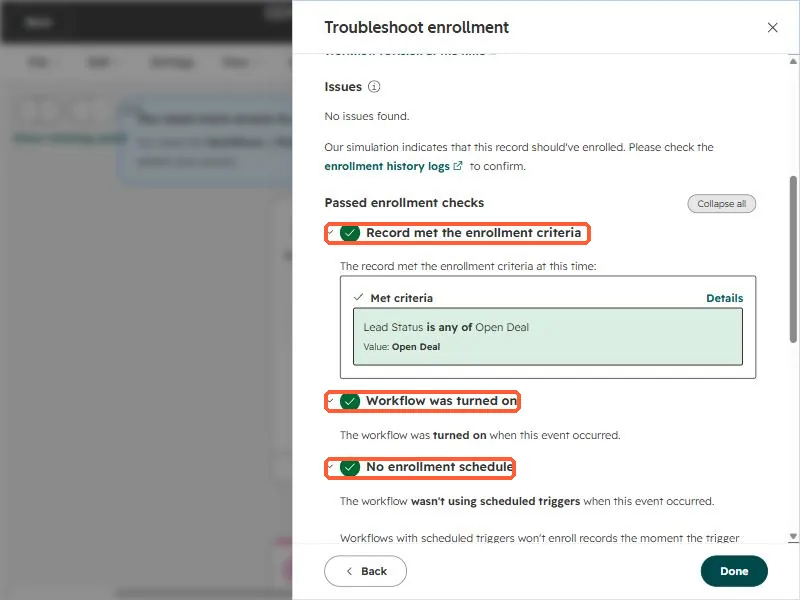

Short answer
Open the workflow, click Performance history, then Troubleshoot enrollment. Choose the record, choose the moment it should have enrolled, and run the test. HubSpot shows a summary (such as Would enroll) and a list of checks, each marked passed or failed. If a check failed, that is your answer.
1. Open the tool from the workflow editor
Open the workflow from Workflows. In the top right, click Performance history (1) and choose Troubleshoot enrollment (2). The same menu has Enrollment history, Action logs, and Troubleshoot actions.


2. Pick the record and the date range
The side panel asks which record you think should have enrolled. Pick it, then set a date and time range. HubSpot lists every moment that record matched any part of the trigger.




3. Choose an event and run the test
Each event on the timeline can be tested. Here the event is a property change: Lead status was changed to Open Deal. Click Test on it.


4. Read the summary
The summary badge tells you the outcome. Would enroll means the record passed every check and the simulation says it should have enrolled. The panel also links to the Workflow revision at the time, which matters when someone edited the workflow after the event.


5. Read the checks
Below the summary, HubSpot lists the enrollment checks, expandable one by one. In the version I tested there are nine:
- Record met the enrollment criteria
- Workflow was turned on
- No enrollment schedule
- No conflicting merge settings
- No conflicting previous enrollments
- Record isn't currently enrolled
- No goal criteria
- Record won't unenroll if it no longer meets criteria
- No unenrollment lists


If the failing check is previous enrollment, read why a contact won't re-enroll.
HubSpot keeps 6 months of enrollment history, and the test can be inaccurate when related data is no longer available. Test soon after the miss.